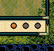
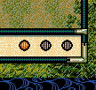

関連するイベントハンドラ
通常、「ターンの切り替わり目」にプログラム処理を入れるのであれば、以下のイベントハンドラに記述するのが良いでしょう。
On_残りターン変更《戦争画面》

On_ターン変更《攻城中画面》

戦争におけるターンとは、「野戦での残りターン」と、
「攻城戦でのターン」です
通常、「ターンの切り替わり目」にプログラム処理を入れるのであれば、以下のイベントハンドラに記述するのが良いでしょう。

int Get_戦争残りターン数()
戦争中ではない場合には、-1が返ってくる。
string カスタム::On_噴出メッセージ直前(string 武将名, string 元メッセージ, メッセージ関連情報型 メッセージ関連情報) {
if (武将名 == "真田幸隆") {
if (Is_文字列マッチ(元メッセージ, "わが隊はすでに\x0A士気旺盛")) {
int 野戦残りターン = Get_戦争残りターン数();
デバッグ出力 << 野戦残りターン << endl;
return to_string(野戦残りターン) + "ターン";
}
}
// 変更しない場合""
return "";
}
void カスタム::On_ターン変更《攻城中画面》(int ターン数) {
int 野戦残りターン = Get_戦争残りターン数();
デバッグ出力 << 野戦残りターン << endl;
}
void カスタム::On_戦闘コマンド表示直前《戦争画面》(int 武将番号) {
int 野戦残りターン = Get_戦争残りターン数();
デバッグ出力 << 野戦残りターン << endl;
}
int Get_攻城戦ターン数()
１～３の値が返ってくる。
戦争中ではない場合には、-1が返ってくる。
string カスタム::On_噴出メッセージ直前(string 武将名, string 元メッセージ, メッセージ関連情報型 メッセージ関連情報) {
if (武将名 == "真田幸隆") {
if (Is_文字列マッチ(元メッセージ, "わが隊はすでに\x0A士気旺盛")) {
if (Is_攻城戦中()) {
int 攻城戦ターン = Get_攻城戦ターン数();
デバッグ出力 << 攻城戦ターン << endl;
return to_string(攻城戦ターン) + "ターン";
}
}
}
// 変更しない場合""
return "";
}
void カスタム::On_戦闘コマンド表示直前《戦争画面》(int 武将番号) {
int 攻城戦ターン = Get_攻城戦ターン();
デバッグ出力 << 野戦残りターン << endl;
}
「戦争 - ターン」に関する主な所は以上となります。 詳しくは「戦場情報型.h」などを参照してください。